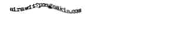

รายละเอียด
ยังไม่มี ;-;
แต่! กิจกรรมจะจัดเวลา 05:00 - 20:00 ของวันที่ 30 กรกฎาคม 2565 โดยจะมีการนัดพบกันเวลา 05:00 ที่ห้องอบรม สสวท. ที่เดิม
ขอให้ผู้เข้าร่วมกิจกรรมที่ไม่ได้พักอาศัยอยู่ภายในสสวท. ทำการตรวจ ATK ภายใน 24 ชั่วโมงก่อนเริ่ม และนำผลมายืนยัน มิฉะนั้นจะไม่สามารถเข้าร่วมได้
สมัคร
ติดต่อสอบถาม
อีเมล
